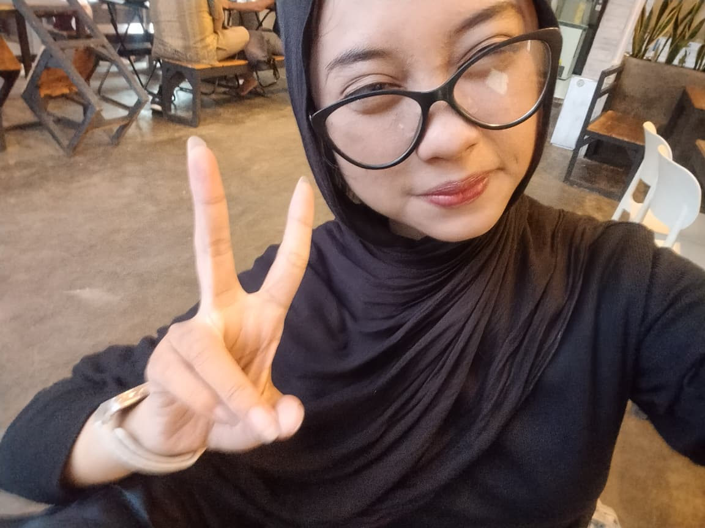
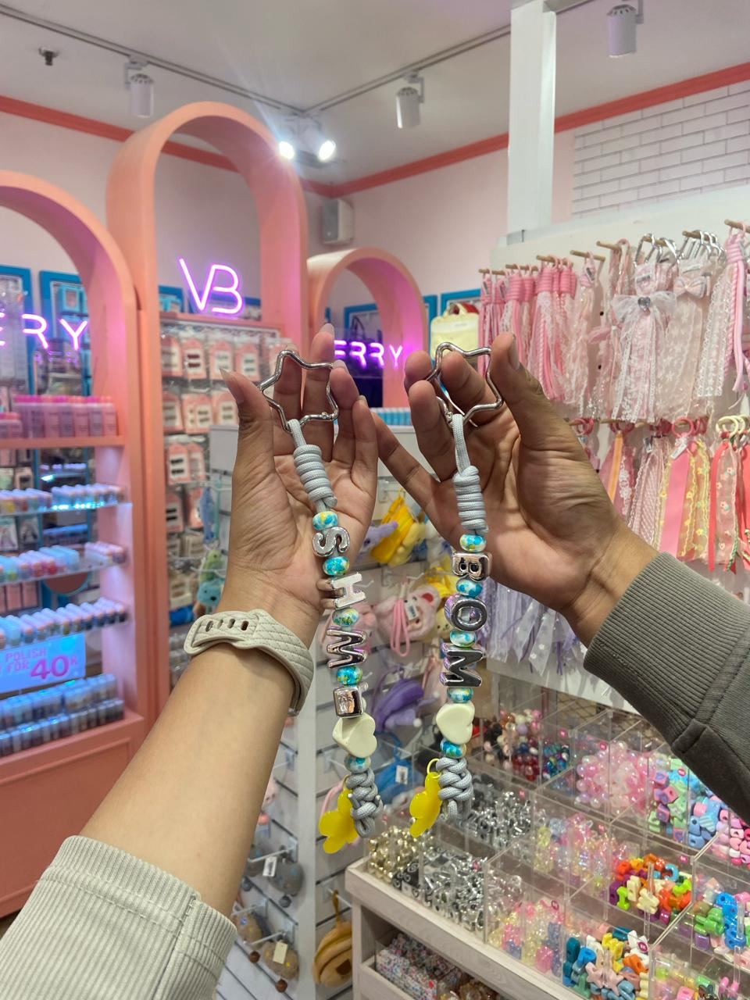
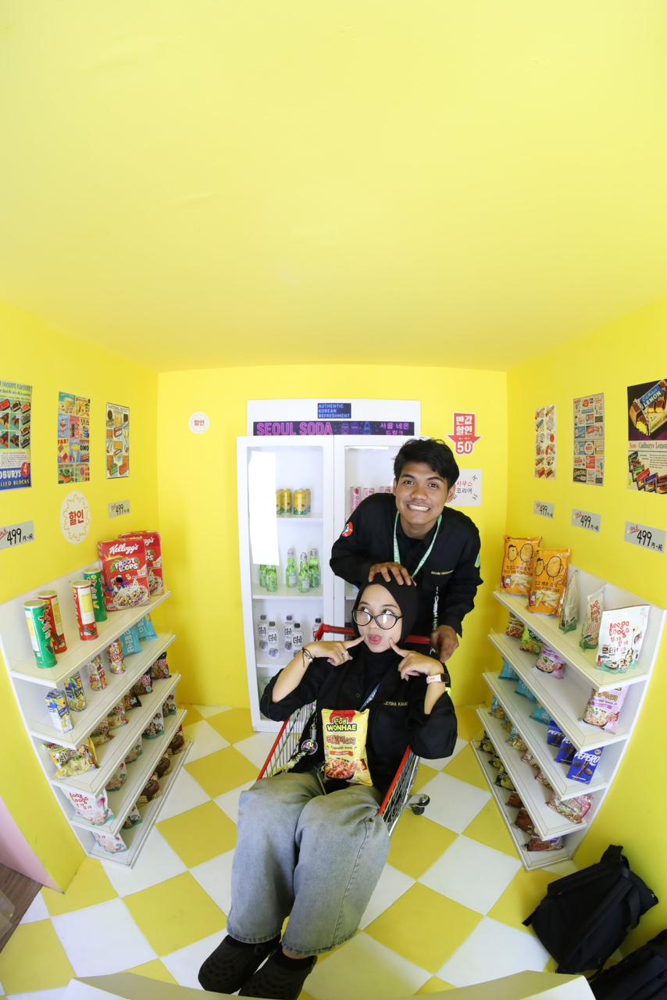

Yaaa ini cuma buat nyimpen foto biar gak ilang yaaa:>.

Isinya cuma foto-foto orang ini yang ada di hp gw

Pokoknya ini waktu di MKG dah gw tempel disini.
yang ini dadakan banget realll no fake-fake.

Klo ini pokoknya abis dari puncak.